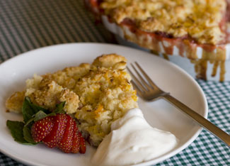

This recipe is adapted from Recipes from the Garden by Rosalind Creasy (Tuttle, 2008). To order, visit Mother Earth Shopping.
For the filling:
6 to 8 stalks rhubarb, cut into 1/2-inch pieces (about 3 cups)
2/3 cup raw sugar
1 tbsp orange or lemon zest
1 tbsp salted butter
1 tbsp all-purpose flour
3 cups sliced strawberries
For the batter:
1 3/4 cup flour
1 tbsp baking powder
1/2 tsp salt
6 tbsp salted butter, chilled
1/2 cup plus 2 tbsp raw sugar, divided
3/4 cup half-and-half
2 tbsp orange or lemon zest, divided
Topping:
1 cup heavy cream whipped with 1 tbsp sugar until soft peaks form (optional)
To make filling: In a saucepan over medium heat, cook the rhubarb, sugar, and 1 tablespoon zest until the rhubarb begins to soften and exude juices, about 2 minutes. Add the butter and flour and bring to a boil while stirring. Cook for about 1 minute. Add the sliced strawberries. Remove from heat and pour the fruit mixture into a deep 10-inch pie dish.
To make batter: Preheat oven to 425 degrees. In a large bowl, sift together the flour, baking powder and salt. Cut the butter into small pieces. With a fork or pastry cutter, cut the chilled butter until the mixture resembles coarse crumbs. Add 1/2 cup of the sugar and blend. Slowly incorporate the half-and-half with a fork. Spoon the dough over the fruit mixture in the pie dish. Mix 2 tablespoons sugar and the remaining zest, and sprinkle it over the top. Bake for 25 to 30 minutes, or until golden brown. Cool slightly and serve with or without whipped cream. Serves 6.
|
 EMILY HELLER For a fresh take on the age-old spring combo of strawberries and rhubarb, try cobbler instead of pie. |
|
|